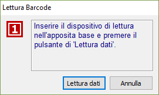
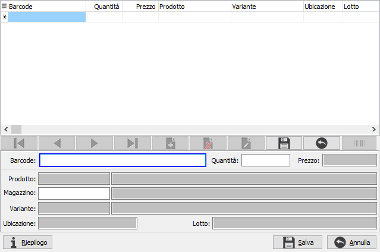
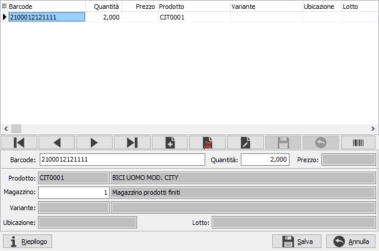
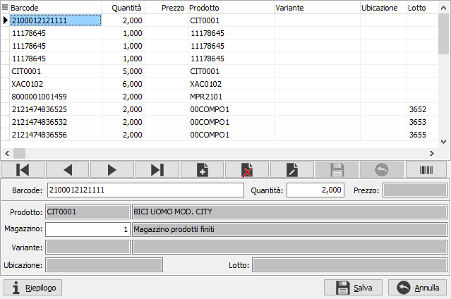
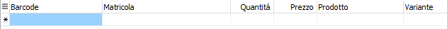
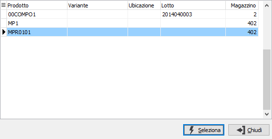
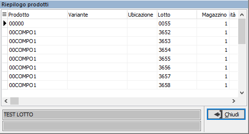
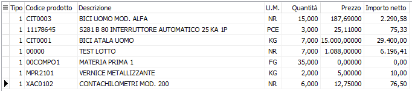
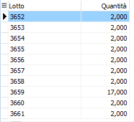
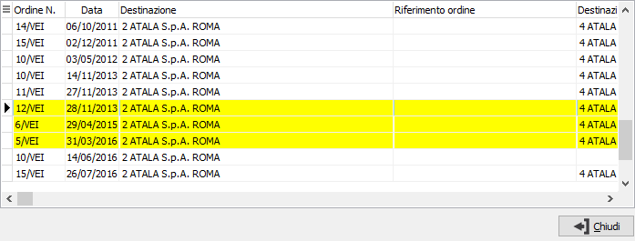

Dati barcode nei documenti
E’ possibile inserire nei documenti dati provenienti da lettori ottici tramite il pulsante “Barcode” presente sulle righe del documento se attivo il relativo modulo e se gestito il codice a barre per il documento.
Alla pressione del pulsante viene aperta una finestra diversa in base a quanto configurato sul flag “Utilizza ricerca con tipi barcode”, nel caso in cui il flag sia disattivo viene aperta la finestra dove indicare se effettuare la lettura dei dati oppure annullare l'operazione..

L'operazione è annullabile anche se è già stata richiesta la lettura. I dati letti, daranno origine alle righe del documento.
Nel caso in cui il flag sia attivo viene aperta la finestra:

In questa finestra è possibile leggere con un lettore barcode in emulazione tastiera oppure utilizzare il bottone Barcode (che viene attivato in stato di visualizzazione e non in stato di inserimento rigo) per leggere i dati da un lettore come descritto nel caso precedente. Da questa finestra è possibile utilizzare sia i barcode degli articoli che i barcode composti.
Se attivo in configurazione Gestione POS il campo "Gestione barcode per unità di misura" sarà presente anche il campo unità di misura, in questo caso l'unità di misura associata al barcode è criterio di raggruppamento anche quando i dati della finestra vengono riportati sul documento.

Se successivamente vengono letti altri barcode, per esempio con un lettore tramite il bottone Barcode, vengono generate altre righe.

Se attiva la gestione matricole sarà presente come primo dato il codice matricola che sarà visualizzato anche in griglia; se viene letto un barcode di una matricola o digitata una matricola valida riferita ad un singolo prodotto automaticamente vengono recuperati tutti i dati associati alla matricola stessa (articolo, variante, ubicazione, lotto), i dati vengono riportati sulla riga come se fosse stato letto un barcode di un prodotto.
 |
Se il codice matricola fosse riferito a prodotti differenti viene aperta una finestra di selezione che consente di scegliere quali dati utilizzare.

Nel caso di barcode con prezzo se per l’articolo è presente un prezzo di listino valido, il prezzo presente sul barcode viene assunto come importo e viene calcolata la quantità come rapporto fra importo e prezzo (Quantità = Importo/Prezzo); i barcode con prezzo non sono gestiti sul documento Packing List.
Premendo sul bottone Riepilogo viene visualizzato un riepilogo degli articoli, in cui i prodotti senza prezzo vengono raggruppati, a parità di dettaglio e magazzino.

Salvando vengono generate le righe con lo stesso raggruppamento visualizzato sul riepilogo; se presenti dettagli per lo stesso prodotto/magazzino questi vengono convogliati sullo stesso rigo.
 |
 |
Nel caso sia configurata l'evasione degli ordini tramite barcode, per quei documenti che lo prevedono, saranno ricercati gli ordini aperti disponibili per l'evasione; se l'evasione è di tipo 'Selettivo' al termine della ricerca verrà visualizzata la finestra di selezione delle teste ordini, dalla quale sarà possibile decidere quali ordini evadere. L'evasione delle righe avviene in modo automatico in base a come configurato.
